Go Home
Site Map
Go Home
Site Map
LED vs. Marker Light
Normal Park/Turn and Marker Bulb
These two images show you how a bulb has power flow in both direction. Notice the marker light. It has change direction dependent on what in park or turn signal. See how the marker is connected and that is not connected to a ground... The park/turn light is use for a ground for the marker. (You may not see a light for ground but its there.)
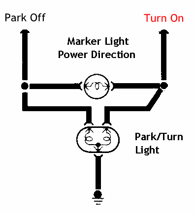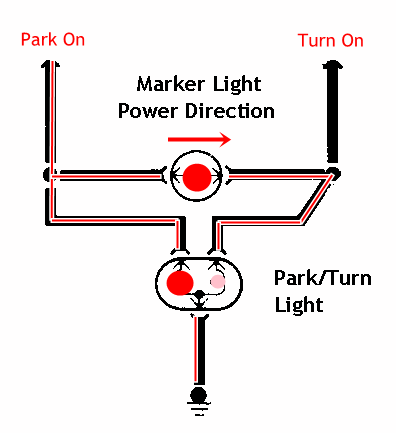
But something is wrong with the Park light is on. It going backward.
That isn't a problem. When the park is on the turn signal going off to make the marker blink on. Watch the picture of the car or check yourself. All Fiero and allot of other from GM, Ford, etc, have this setup.
LED Front Park/Turn and Marker doesn't work in Fiero
LED works only in one way. Most LED has a + and - pin. Mark or not they still has a + and -. LED uses this symbol and polarity. 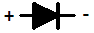(All diode use this symbol. Technically LED is 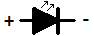but I'm not editing my animation. Diode is a Diode...) If they do then they work like this...
If marker works for turn signal is Ok then it won't turn on for park and it won't flash when park is on.
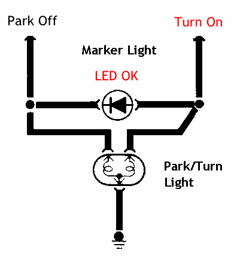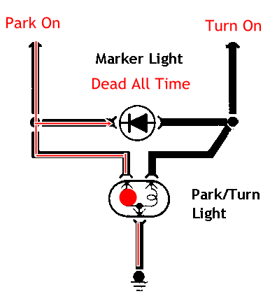
So you put them the other way. Look better right? But now it doesn't work for Turn signal when Park is off...
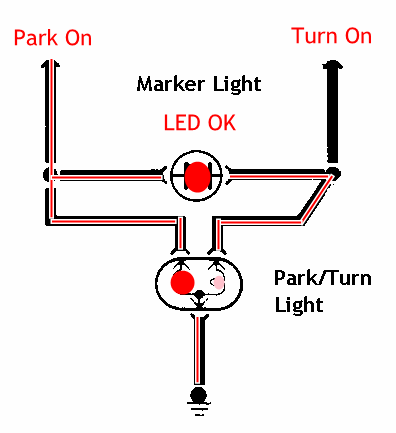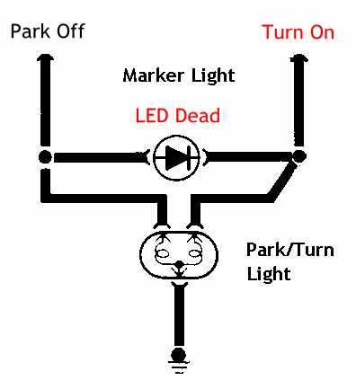
I really want LED. Isn't there anything?
Yes there is. Use two LED parallel and one is backward to the other.
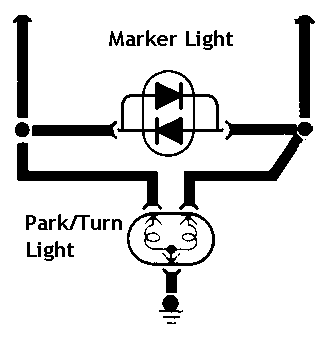
(Please don't build this...)
Can you buy bulb like this?
Yes! From timgray:
Only LOW grade LED's do that. The cheapies from ebay that only work one way will have the issues described.
High quality LED marker lights work if powered either way. The driver for the led will accept reverse polarity or normal.
My aftermarket LED bulbs DO work perfectly in the marker light
positions. But then mine can be inserted any way and work just like a light
bulb.
If the led bulb you bought only work when inserted one way, it's a low end one
and should be returned for a properly designed one that will work no matter
what direction voltage is flowing,.
He gets it from superbrightleds.com and TopNotch, a link from autolumination.com. The company can tell you which one will work.
They will not fit or I buy the wrong kind. Poop.
Fit I can't help you but "wrong" kind... No problem. Buy bridge rectifier. You need two per car. (Thank tjm4fun. I should know this but I was sleeping.) Fit? Yes. Some 194 LED do not fit. They are too big.
- Cut wire from socket.
- Solder car end to rectifier ac connection. (Symbol ~ )
- Solder plug wire to rectifier + and -. (Wires don't matter.)
- Turn on Parking light.
- If "bulb" doesn't go on, reverse it.
- Use RTV Silicone for wires to keep water and "rust" off. Use 2 or 3 coats.
- Repeat on the other side.
You should use RTV Silicone that is safe either Electrical or Aquarium. Aquarium sealer usually cheaper and easy to get. Just Google it or go to a pet store. Some pet and most fish store will have it. (You may use regular RTV Silicone but not say we didn't warn you.)
This from TopNotch. He use Radio Shack part # 276-1152, 100v 1.5a. (Any with 25v 1a and higher will work.)
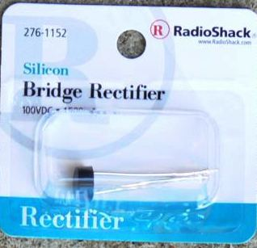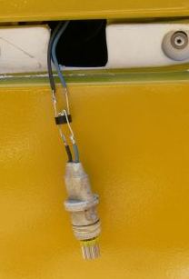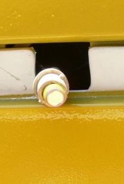
Also... If you have to go back to a light bulb then no problem as 194 draw 0.27 amps.
Result
Thank to randye, we have this video...
He used the bridge rectifier and LEDs from TLG-Auto.
Note: TLG-Auto's current part includes the rectifier. They stopped making them.
Using LED in Front Park/Turn Signal?
Carefully check the LED front "bulb" (ones that replace 2057 etc.) works right when Park is on, Turn is on, and both are on. Some LED may not work in Fiero front park/turn. Example keeps Turn section on all the time when Parking is on. You want a light bulb for some application. Light bulb filament acts like a resistor for the ground, without lighting up or with very dim light.
If you do, try the links above. They can tell you which ones work.
Why does it do that?
Turn Signal can't be seen on side far enough. Some model, like Fiero, use side marker to make up the difference. FMVSS 571.108 requires Turn signal be visible by some spec and if not then marker may be use to flash too.
So?
Think passing a big bus or trunk. Someone partway around you and can't see rear light, your marker turn signal doesn't work, he move into your space. Crash. It happen as is it, worse then part of the turn signal doesn't work. Europe has extra light in turn signal for that reason.